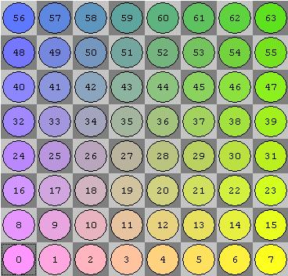
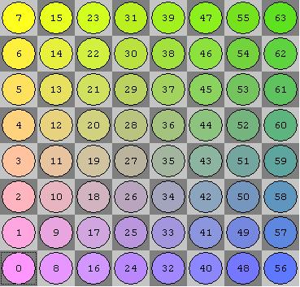

Square Mapping Considerations
Home * Board Representation * Bitboards * Square Mapping Considerations
Bitboards implement a finite set of up to 64 elements - all the squares of a chessboard. There is a bijective one-to-one correspondence between bits of a bitboard and the squares of a board, but there are many different ways to create this mapping. Some various considerations on this mapping are listed here.
Contents
Square and Bitindex
In the strict sense there are even three finite sets with bijective one-to-one correspondence.
- A set of all squares on a chessboard for from a1 to h8 (A1 to H8). The 8 ranks of a board are labeled from 1 to 8.The 8 files of a board are labeled from 'a' to 'h' (or 'A' to 'H').
- A set of all 64 squares enumerated from 0..63 (or 1..64).
- The 64 bits inside a bitboard may be enumerated in different orders. (FirstOne versus LastOne, Forward versus Reverse).
Usually we define the bit-indices in arithmetical order to map bits inside a bitboard to numbers.
- Bit index zero is the least significant bit (LSB = 2^0).
- Bit index 63 is the most significant bit (MSB = 2^63).
The reversed ordering was used as well, motivated by the leading zero count instruction of certain processors.
In the following we rely on arithmetical bit-order order and focus on how to map squares to numbers, which applies to other 8*8 board representations as well.
Deduction on Files and Ranks
We can deduct square mapping on enumerating files and ranks from 0 to 7 each. There are two common approaches to calculate the square-index from file or rank, Least Significant File Mapping or Least Significant Rank Mapping.
LSF squareIndex = 8*rankIndex + fileIndex LSR squareIndex = 8*fileIndex + rankIndex
LSR mapping has some advantages in calculating pawn attacks, since there are no wraps to consider. Anyway, more common is LSF-mapping where ranks are aligned to the eight consecutive bytes of a bitboard and we further rely on LSF-mapping.
squareIndex = 8*rankIndex + fileIndex FileIndex = squareIndex modulo 8 = squareIndex & 7 RankIndex = squareIndex div 8 = squareIndex >> 3
Endianness
Main article: Endianness The question remains how to enumerate files and ranks. There are two different orders each, little-endian versus big-endian order of bits and bytes. Thus in total four possible alternatives. The drawback of little endian file mapping becomes aware if we write bitboards as binary or hexadecimal strings, since we usually write numbers big endian wise.
Anyway, further we rely on little-endian mapping of files and ranks though, since we retain a kind of "natural" relation - that is a < h and 0 < 7.
Rank 1 .. Rank 8 -> 0..7 A-File .. H-File -> 0..7
To convert from little-endian file mapping to big-endian file mapping and vice versa:
squareIndexBigEndianFile = squareIndexLittleEndianFile ^ 7; squareIndexLittleEndianFile = squareIndexBigEndianFile ^ 7;
To convert from little-endian rank mapping to big endian-rank mapping and vice versa:
squareIndexBigEndianRank = squareIndexLittleEndianRank ^ 56; squareIndexLittleEndianRank = squareIndexBigEndianRank ^ 56;
One may combine both conversions in one step by xoring with 63.
Little-Endian Rank-File Mapping
Most often used in CPW samples
|
 |
Square Enumeration
Little endian rank-file (LERF) mapping implies following C++ enumeration:
enum enumSquare {
a1, b1, c1, d1, e1, f1, g1, h1,
a2, b2, c2, d2, e2, f2, g2, h2,
a3, b3, c3, d3, e3, f3, g3, h3,
a4, b4, c4, d4, e4, f4, g4, h4,
a5, b5, c5, d5, e5, f5, g5, h5,
a6, b6, c6, d6, e6, f6, g6, h6,
a7, b7, c7, d7, e7, f7, g7, h7,
a8, b8, c8, d8, e8, f8, g8, h8
};
Compass Rose
We rely on the compass rose to identify ray-directions with following increments to neighbored squares.
noWe nort noEa
+7 +8 +9
\ | /
west -1 <- 0 -> +1 east
/ | \
-9 -8 -7
soWe sout soEa
Some hexadecimal Constants
Some bitboard constants with LERF-mapping:
a-file 0x0101010101010101 h-file 0x8080808080808080 1st rank 0x00000000000000FF 8th rank 0xFF00000000000000 a1-h8 diagonal 0x8040201008040201 h1-a8 antidiagonal 0x0102040810204080 light squares 0x55AA55AA55AA55AA dark squares 0xAA55AA55AA55AA55
Little-Endian File-Rank Mapping
|
 |
Square Enumeration
Little endian file-rank (LEFR) mapping implies following C++ enumeration:
enum enumSquare {
a1, a2, a3, a4, a5, a6, a7, a8,
b1, b2, b3, b4, b5, b6, b7, b8,
c1, c2, c3, c4, c5, c6, c7, c8,
d1, d2, d3, d4, d5, d6, d7, d8,
e1, e2, e3, e4, e5, e6, e7, e8,
f1, f2, f3, f4, f5, f6, f7, f8,
g1, g2, g3, g4, g5, g6, g7, g8,
h1, h2, h3, h4, h5, h6, h7, h8
};
Compass Rose
We rely on the compass rose to identify ray-directions with following increments to neighbored squares.
noWe nort noEa
-7 +1 +9
\ | /
west -8 <- 0 -> +8 east
/ | \
-9 -1 +7
soWe sout soEa
Some hexadecimal Constants
Some bitboard constants with LEFR-mapping:
a-file 0x00000000000000FF h-file 0xFF00000000000000 1st rank 0x0101010101010101 8th rank 0x8080808080808080 a1-h8 diagonal 0x8040201008040201 h1-a8 antidiagonal 0x0102040810204080 light squares 0x55AA55AA55AA55AA dark squares 0xAA55AA55AA55AA55
See also
Forum Posts
- Efficient Bitboard Implementation on 32-bit Architecture by Roberto Waldteufel, CCC, October 25, 1998
- BitBoard representations of the board by Uri Blass, CCC, October 14, 2007
- Bit Board Orientation by mobmat, CCC, October 05, 2020
External Links
- Coldplay - Square One (2005), YouTube Video